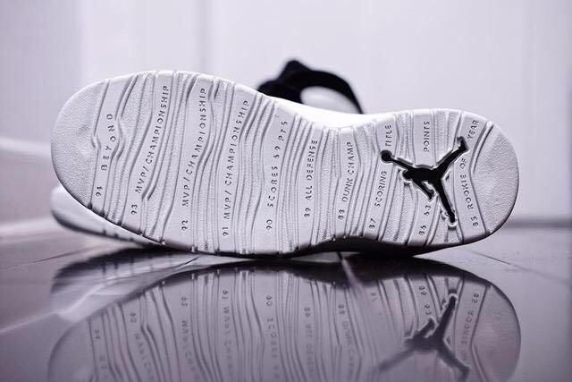

Air Jordan X

© 1995
“I’m Back”时隔17个月乔丹重回赛场，这个让全世界的乔丹迷仿佛看到了生活的希望。1995年在耐克刚刚推出最新的乔丹10代以后不久，伟大的迈克尔·乔丹又回到了NBA怀抱，续写他神奇的辉煌经历。在乔丹复出之前，耐克先期投放市场的乔丹10代只有3个颜色，白/灰、黑和白/天蓝。乔丹复出后耐克马上推出了5款都市限定款。
10代的推出也适逢乔丹系列10周年的纪念，也标志着一个运动品牌神话的诞生。历史上没有一个球员代言的系列可以延续那么长时间。乔丹10代最特别的地方就在它的鞋底上，上面记录了85至94的10年间乔丹的荣誉和特殊经历。让人们再一次对飞人肃然起敬。
从乔丹10代上我们可以现在球鞋的一些影子，1995年是运动鞋设计理念的一个新高峰，乔丹10代看上去更加简洁，在鞋面上甚至找不到任何一个乔丹和耐克的标志，飞人的标志只在鞋底和后跟出现，而且都缩小了，这体现了设计者追求的别致素雅风格，也代表了乔丹与众不同的气质，在技术上依然
使用了内置气垫，鞋带扣采用了松紧带设计，鞋带依然是圆型的，后跟增加了提鞋用的吊环，在细小的环节上已经能看出设计者的确别具匠心。除了乔丹，皮蓬在内很多球星都穿过这款鞋。伴随着值得纪念的乔丹十代登场，
乔丹重回NBA。乔丹十代中底采用超轻量的phylon材质，让乔丹的体能发挥至极限。在鞋底外部上记述了乔丹在NBA球场上驰骋10年所创下的辉煌战绩。
在美国，乔丹十代是以都市限定颜色上市，共有5种颜色上市，其中又以全黑配上红白相间的款式最受欢迎。
1995年3月19日，乔丹重回NBA赛场，再次穿上公牛队战袍。这一次乔丹穿上了45号球衣，这个号码是他在高中比赛时用过的。乔丹全场28投7中，拿到19分，6个篮板和6次助攻，公牛队加时以96-103负于步行者队。